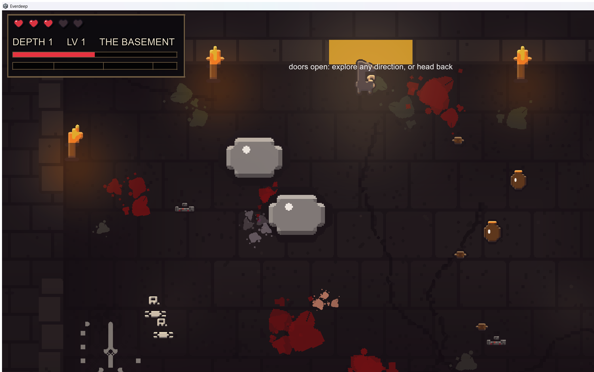
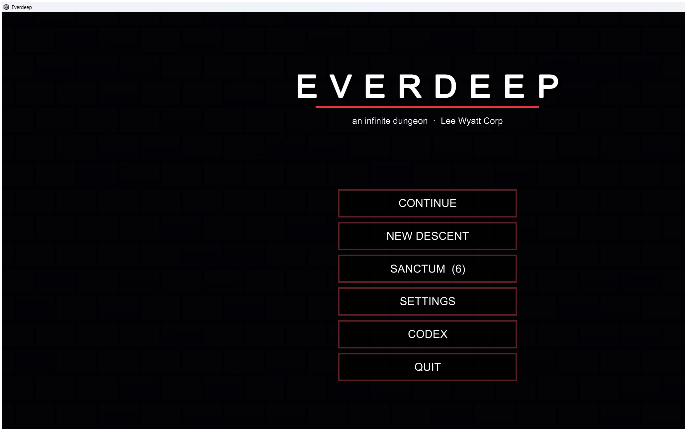

Playtest fixes: bosses, puzzles, lore, codex
Live playtest session 7/16, three builds shipped, all errors=0. Fixed from Aaron's live feedback:
- Boss arenas now vary per room: size 14-19 wide x 8-10.8 tall, five floor plans (open arena, pillars, bridge, ring, diagonal). Was one identical hard-coded room every fight.
- First-boss difficulty on-ramp: bosses met shallow spawn at ~60% HP ramping to full by depth 12, longer grace before their first attack, one escort instead of two below depth 10.
- Brood-call adds: bosses with the summon pattern now call their OWN species as small adds (kin, not mini-me clones), capped at 3 non-boss enemies alive. Summoner bosses start the fight alone.
- Ordered plate puzzle reworked into a memory puzzle: the room flashes the sequence once on discovery, you repeat it from memory. Wrong step fires ONE "WRONG - WATCH AGAIN" (was spamming every frame) and replays the demo.
- Lore pages in the world are now small weathered parchment at a casual tilt on a level stone ledge, not the oversized white sheet.
- Codex cleaned up: ledger rule under the title, center column divider, hover row bars on clickable lore entries.
Screenshots below are the most recent renders on file (7/9 art passes). Fresh in-game before/after shots start with the next build once the F9 screenshot key lands.

roster ingame
roster menu

st ingame

st menu